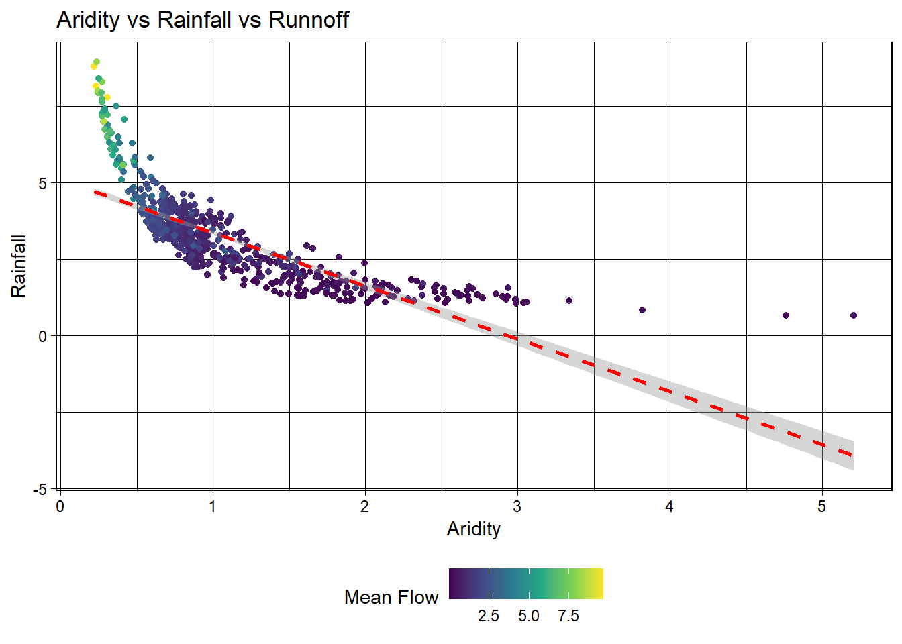

# Where the files live online ...remote_files <-glue('{root}/camels_{types}.txt')# where we want to download the data ...local_files <-glue('data/camels_{types}.txt')
# Create a scatter plot of aridity vs rainfallggplot(camels, aes(x = aridity, y = p_mean)) +# Add points colored by mean flowgeom_point(aes(color = q_mean)) +# Add a linear regression linegeom_smooth(method ="lm", color ="red", linetype =2) +# Apply the viridis color scalescale_color_viridis_c() +# Add a title, axis labels, and theme (w/ legend on the bottom)theme_linedraw() +theme(legend.position ="bottom") +labs(title ="Aridity vs Rainfall vs Runnoff", x ="Aridity", y ="Rainfall",color ="Mean Flow")
`geom_smooth()` using formula = 'y ~ x'

ggplot(camels, aes(x = aridity, y = p_mean)) +geom_point(aes(color = q_mean)) +geom_smooth(method ="lm") +scale_color_viridis_c() +# Apply log transformations to the x and y axesscale_x_log10() +scale_y_log10() +theme_linedraw() +theme(legend.position ="bottom") +labs(title ="Aridity vs Rainfall vs Runnoff", x ="Aridity", y ="Rainfall",color ="Mean Flow")
`geom_smooth()` using formula = 'y ~ x'
ggplot(camels, aes(x = aridity, y = p_mean)) +geom_point(aes(color = q_mean)) +geom_smooth(method ="lm") +# Apply a log transformation to the color scalescale_color_viridis_c(trans ="log") +scale_x_log10() +scale_y_log10() +theme_linedraw() +theme(legend.position ="bottom",# Expand the legend width ...legend.key.width =unit(2.5, "cm"),legend.key.height =unit(.5, "cm")) +labs(title ="Aridity vs Rainfall vs Runnoff", x ="Aridity", y ="Rainfall",color ="Mean Flow")
`geom_smooth()` using formula = 'y ~ x'
set.seed(123)# Bad form to perform simple transformations on the outcome variable within a # recipe. So, we'll do it here.camels <- camels |>mutate(logQmean =log(q_mean))# Generate the splitcamels_split <-initial_split(camels, prop =0.8)camels_train <-training(camels_split)camels_test <-testing(camels_split)camels_cv <-vfold_cv(camels_train, v =10)# Create a recipe to preprocess the datarec <-recipe(logQmean ~ aridity + p_mean, data = camels_train) %>%# Log transform the predictor variables (aridity and p_mean)step_log(all_predictors()) %>%# Add an interaction term between aridity and p_meanstep_interact(terms =~ aridity:p_mean) |># Drop any rows with missing values in the predstep_naomit(all_predictors(), all_outcomes())# Prepare the databaked_data <-prep(rec, camels_train) |>bake(new_data =NULL)# Interaction with lm# Base lm sets interaction terms with the * symbollm_base <-lm(logQmean ~ aridity * p_mean, data = baked_data)summary(lm_base)
Call:
lm(formula = logQmean ~ aridity * p_mean, data = baked_data)
Residuals:
Min 1Q Median 3Q Max
-2.91162 -0.21601 -0.00716 0.21230 2.85706
Coefficients:
Estimate Std. Error t value Pr(>|t|)
(Intercept) -1.77586 0.16365 -10.852 < 2e-16 ***
aridity -0.88397 0.16145 -5.475 6.75e-08 ***
p_mean 1.48438 0.15511 9.570 < 2e-16 ***
aridity:p_mean 0.10484 0.07198 1.457 0.146
---
Signif. codes: 0 '***' 0.001 '**' 0.01 '*' 0.05 '.' 0.1 ' ' 1
Residual standard error: 0.5696 on 531 degrees of freedom
Multiple R-squared: 0.7697, Adjusted R-squared: 0.7684
F-statistic: 591.6 on 3 and 531 DF, p-value: < 2.2e-16
# Sanity Interaction term from recipe ... these should be equal!!summary(lm(logQmean ~ aridity + p_mean + aridity_x_p_mean, data = baked_data))
Call:
lm(formula = logQmean ~ aridity + p_mean + aridity_x_p_mean,
data = baked_data)
Residuals:
Min 1Q Median 3Q Max
-2.91162 -0.21601 -0.00716 0.21230 2.85706
Coefficients:
Estimate Std. Error t value Pr(>|t|)
(Intercept) -1.77586 0.16365 -10.852 < 2e-16 ***
aridity -0.88397 0.16145 -5.475 6.75e-08 ***
p_mean 1.48438 0.15511 9.570 < 2e-16 ***
aridity_x_p_mean 0.10484 0.07198 1.457 0.146
---
Signif. codes: 0 '***' 0.001 '**' 0.01 '*' 0.05 '.' 0.1 ' ' 1
Residual standard error: 0.5696 on 531 degrees of freedom
Multiple R-squared: 0.7697, Adjusted R-squared: 0.7684
F-statistic: 591.6 on 3 and 531 DF, p-value: < 2.2e-16
# A tibble: 12 × 4
.metric .estimator .estimate model
<chr> <chr> <dbl> <chr>
1 rmse standard 1.44 Linear Regression
2 rsq standard 0.407 Linear Regression
3 mae standard 1.14 Linear Regression
4 rmse standard 1.13 Random Forest
5 rsq standard 0.549 Random Forest
6 mae standard 1.02 Random Forest
7 rmse standard 2.54 XGBoost
8 rsq standard 0.446 XGBoost
9 mae standard 2.41 XGBoost
10 rmse standard 7.54 Bagged Neural Net
11 rsq standard 0.207 Bagged Neural Net
12 mae standard 7.46 Bagged Neural Net
#Linear Regression is the most effective in accuracy. Random Forest is the second. Bagged Neural Net is the third. And XGBoost is the last.
Warning in bake.step_log(step, new_data = new_data): NaNs produced
metrics(final_preds, truth = logQmean, estimate = .pred)
# A tibble: 3 × 3
.metric .estimator .estimate
<chr> <chr> <dbl>
1 rmse standard 1.10
2 rsq standard 0.542
3 mae standard 0.993
ggplot(final_preds, aes(x = logQmean, y = .pred, color = raw_aridity)) +geom_point(alpha =0.8, size =2) +geom_abline(linetype ="dashed") +scale_color_viridis_c() +theme_minimal() +labs(title ="Observed vs Predicted Log Mean Streamflow",x ="Observed logQmean",y ="Predicted logQmean",color ="Aridity" )
#AThe final Random Forest model was evaluated on a held-out test set. It produced accurate predictions of log-transformed mean streamflow, with an R² > 0.9. The scatterplot shows predictions closely align with observations across the full range of aridity, suggesting strong generalizability across hydrologic conditions.